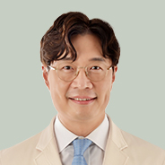
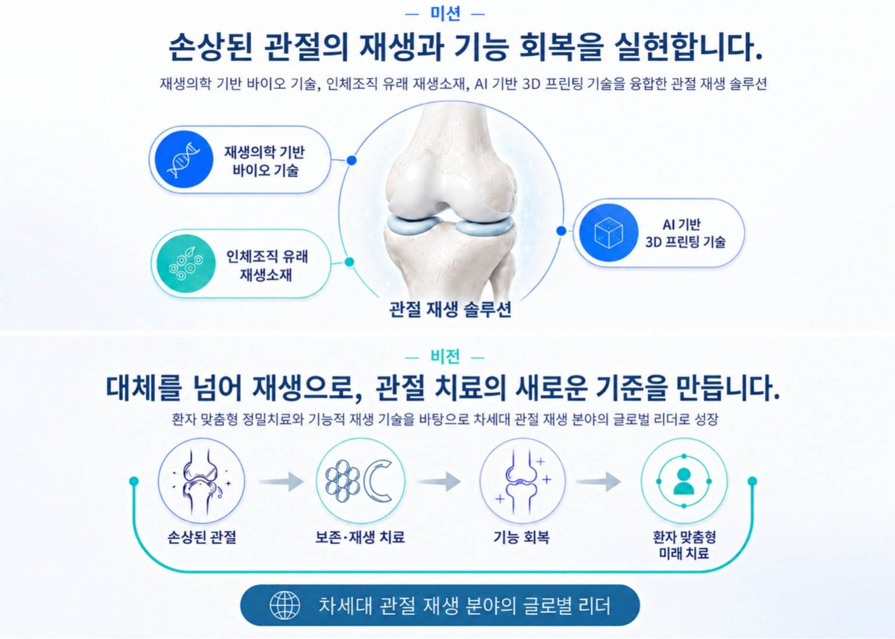

Problems discovered in the operating room — solved by a regenerative medicine platform.수술 현장에서 발견한 문제를, 재생의학 플랫폼으로 해결합니다.
ArthRegen was founded in 2025 as a spin-off from the Department of Orthopedic Surgery at Samsung Medical Center. Starting from unmet clinical needs encountered at the point of care, surgeons, scientists, and engineers together develop a regenerative medicine platform for joint tissue regeneration and functional recovery. 아스리젠은 2025년 삼성서울병원 정형외과에서 스핀오프하여 설립되었습니다. 임상 현장의 미충족 수요에서 출발해, 외과의·과학자·공학자가 함께 관절 조직의 재생과 기능 회복을 위한 재생의학 플랫폼을 개발합니다.
Founder's
message.창업자 인사말.
Beyond the limits of the operating room —
building joint regeneration solutions that reach more patients.
임상 현장의 한계를 넘어, 더 많은 환자에게 닿는 관절 재생 솔루션을 만들겠습니다.

Hello. I am Joon-Ho Wang, CEO of ArthRegen Co., Ltd.
As an orthopedic surgeon specializing in joint disorders, I have spent many years treating patients whose quality of life has been diminished by joint damage and chronic pain. Joint disease is more than physical pain — it brings constraints on daily life and emotional suffering alongside it.
Encountering these patients in the operating room and clinic, I continued research into regenerative therapies that could more fundamentally restore damaged joints. Yet however meaningful academic outcomes might be, I came to feel deeply that research has limits if it does not translate into actual patient treatment and improved lives.
ArthRegen began from that recognition. The company was founded to translate laboratory results into real therapeutic technologies, and to improve the lives of patients suffering from joint damage and pain. The path of founding a company is not easy, but seeing what was once only a dream take shape — evolving into solutions that can help more patients — has brought both anticipation and meaning.
Going forward, ArthRegen will continue to set a new standard for joint regeneration therapy through patient-centered research and technology development grounded in clinical evidence. I ask for your continued interest and support.
Thank you.
안녕하십니까.
아스리젠㈜ 대표이사 왕준호입니다.
저는 관절 전문 정형외과 의사로서, 오랜 시간 관절 손상과 만성 통증으로 삶의 질이 저하된 환자들을 진료해왔습니다. 관절 질환은 단순한 육체적 통증을 넘어, 일상생활의 제약과 정신적 고통까지 동반하는 문제입니다.
임상 현장에서 이러한 환자들을 마주하며, 저는 손상된 관절을 보다 근본적으로 회복시키기 위한 재생 치료 연구를 지속해왔습니다. 그러나 연구가 아무리 의미 있는 학술적 성과로 이어지더라도, 실제 환자의 치료와 삶의 개선으로 연결되지 않는다면 한계가 있다는 점을 절실히 느꼈습니다.
아스리젠은 그 문제 의식에서 출발한 회사입니다. 연구실의 성과를 실제 치료 기술로 연결하고, 관절 손상과 통증으로 고통받는 환자들의 삶을 개선하기 위해 설립되었습니다. 창업의 과정은 쉽지 않지만, 꿈으로만 생각했던 일이 현실화되고 더 많은 환자에게 도움이 될 수 있는 솔루션으로 발전해가는 과정에서 큰 기대와 보람을 느끼고 있습니다.
아스리젠은 앞으로도 환자 중심의 연구와 임상적 근거에 기반한 기술 개발을 통해, 관절 재생 치료의 새로운 기준을 만들어가겠습니다. 지속적인 관심과 성원을 부탁드립니다.
감사합니다.
We realize the regeneration and functional recovery of damaged joints.손상된 관절의 재생과 기능 회복을 실현합니다.
ArthRegen develops clinically applicable joint regeneration solutions by integrating bio, regenerative biomaterial, and AI-driven 3D printing technologies. Starting from unmet clinical needs, we aim to contribute to improving patients' quality of life through technologies that are usable in real clinical practice. 아스리젠은 바이오·재생소재·AI 기반 3D 프린팅 기술을 융합해 임상 현장에서 활용 가능한 관절 재생 솔루션을 개발합니다. 임상 현장의 미충족 수요에서 출발해, 실제 치료 현장에서 활용 가능한 기술로 환자의 삶의 질 개선에 기여하고자 합니다.
A global leader innovating next-generation joint regeneration.차세대 관절 재생을 혁신하는 글로벌 리더.
Built on patient-specific precision therapy and functional regeneration technology, ArthRegen aims to grow into a global leader in next-generation joint regeneration. By building a joint regeneration platform that integrates patient-specific precision therapy, bio-based artificial joints, and functional regeneration technology, we will grow into a global specialized company in joint regeneration. 아스리젠은 환자 맞춤형 정밀치료와 기능적 재생 기술을 바탕으로, 차세대 관절 재생 분야의 글로벌 리더로 성장하고자 합니다. 환자 맞춤형 정밀치료, 바이오 기반 인공관절, 기능적 재생 기술을 통합한 관절 재생 플랫폼을 구축하여 글로벌 관절 재생 전문 기업으로 성장하겠습니다.

Click the image to enlarge 이미지를 클릭하면 확대됩니다
At a glance.회사 개요.
Corporate profile회사 정보
Core business주요 사업
A regenerative joint medicine company born from clinical and research experience at Samsung Medical Center.삼성서울병원 정형외과의 임상·연구 경험에서 출발한 관절 재생의학 기업.
- MarArthRegen Inc. founded — a joint regenerative medicine spin-off biotech venture built on clinical and research experience from the Department of Orthopedic Surgery at Samsung Medical Center3월㈜아스리젠 설립 — 삼성서울병원 정형외과의 임상·연구 경험을 기반으로 출발한 관절 재생의학 스핀오프 바이오벤처
- JunSelected for the Startup-Leading University Program — laboratory-specialized startup track6월창업중심대학 사업 선정 — 실험실 특화형 창업 선도 대학 사업 선정
- JulPorous 3D meniscus scaffold and biodegradable medical device incorporating it (patent technology transfer: KR 10-2023-0151068)7월다공성의 3차원 반월연골판 스캐폴드 및 그를 포함하는 생분해성 의료기기 (특허기술 이전: KR 10-2023-0151068)
- AugSelected for KODIT Start-up NEST 18th cohort8월신용보증기금 Start-up NEST 18기 선정
- SepIssued KIBO technology guarantee certificate9월기술보증기금 기술보증서 발급
- OctSelected as a KIBO U-tech Valley company10월기술보증기금 U-tech 밸리 기업 선정
- DecCorporate R&D center established — Patient-specific implant 3D structure prediction device and method (patent technology transfer: KR 10-2023-0018220)12월기업부설연구소 설립 — 환자 맞춤형 이식체 3차구조 예측 장치 및 방법 (특허기술 이전: KR 10-2023-0018220)
- JanMOU signed with Seoul Women's University1월서울여대 MOU 체결
- FebMOU signed with T&R Biofab2월T&R Biofab MOU 체결
- MarVenture company certification / MOU signed with ORTHOTECH3월벤처기업 인증 / ORTHOTECH MOU 체결
- AprJoined Korea Bio Association as a full member4월한국바이오협회 정회원 가입
- MaySelected for the Startup-Leading University linked program5월창업중심대학 연계 사업 선정